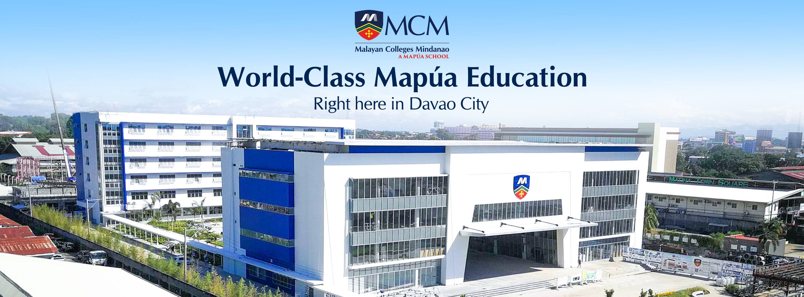
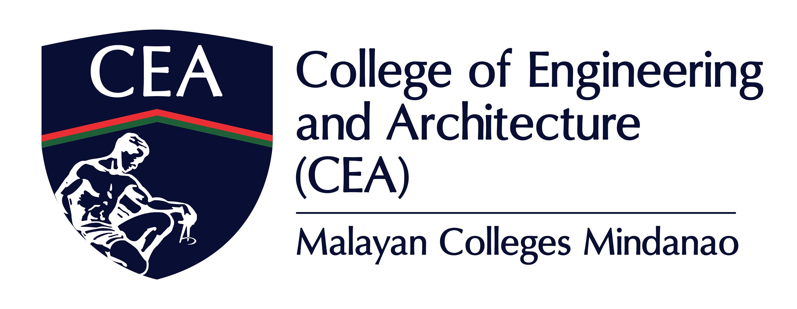

Malayan Colleges Mindanao
Excellence and Relevance
Known as the Philippines’ seat of technological education excellence, Mapúa University is further extending its tradition of excellence in Mindanao through the establishment of Malayan Colleges Mindanao, occupying a 3-hectare land area along Gen. Douglas MacArthur Highway, beside Matina Town Square in Matina, Davao City. MCM is accepting Senior High School students and College students, offering an array of courses fit for those looking to develop skills in Engineering and Architecture, Arts and Sciences, Computing and Information Science, and Business. We have a strong focus on 21st Century digital learning, wherein we not only provide state-of-the-art learning facilities but also equip each student with the best digital learning tools for ease of access to assignments, exams, and almost ten-thousand online learning materials on Wiley from our Vital Source Library.
MCM has built a community of competent and innovative leaders who possess attributes that make them globally competitive and locally in-demand. This can be attributed to our Learner-Centered Outcomes-based Education, a method that helps ensure that student learning is focused on attaining industry standards through clearly defined outcomes. Within MCM’s DNA is the academic excellence that Mapúa is known for, and we are committed to bringing about the same level of excellence into our community here in Mindanao.
College of Engineering and Architecture
College of Engineering and Architecture (CEA) transforms its graduates to become globally competitive, innovative leaders, socially responsible and result-oriented engineers and architects. MCM-CEA commits to educate students imbued with good moral and ethical values while engaging economically viable research and innovation that is relevant locally and beyond. At CEA, students are primed and supervised by their adept mentors equipping students with profound knowledge and excellent skill-set through outcomes-based curricula in order for the students to have access to personalized learning allowing them to perform their best and achieve their academic and personal goals meeting local and global standards. This kind of learning environment will upskill students to find state of the art solutions to the most challenging technological and socio-technological issues of different industries.
About Me
Hi! I am Josiah Izaak D. Lopez, a BS Computer Engineering Student. My hobbies include Cycling, Playing Video Games, Reading Manga and Collecting NFTs. I am 21 years old from General Santos City.